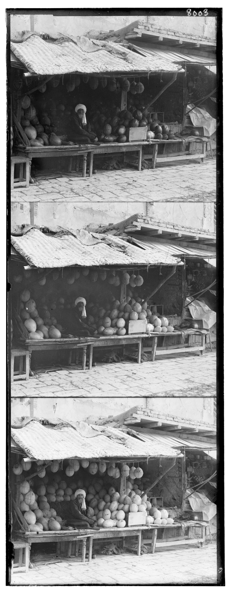
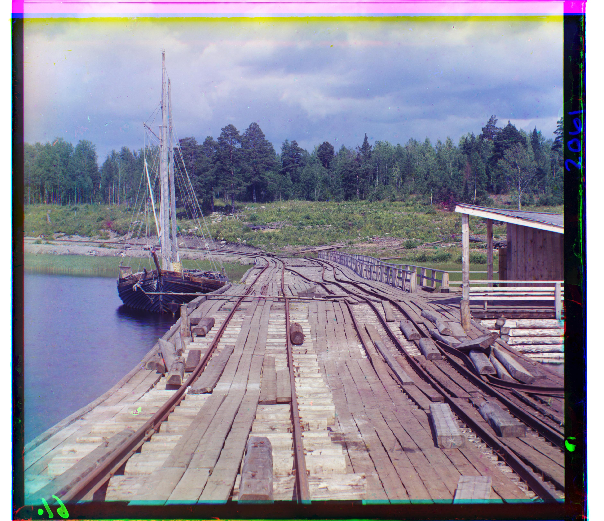
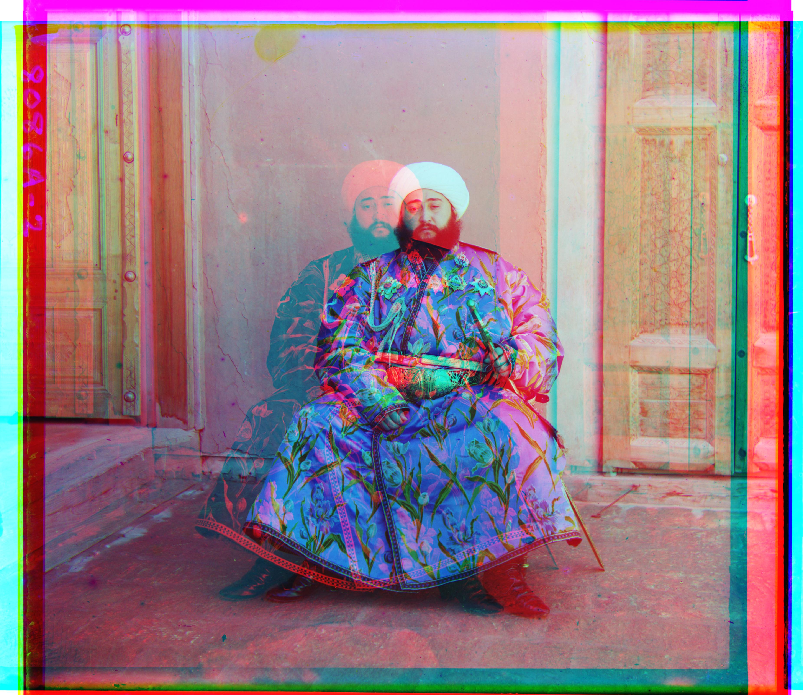
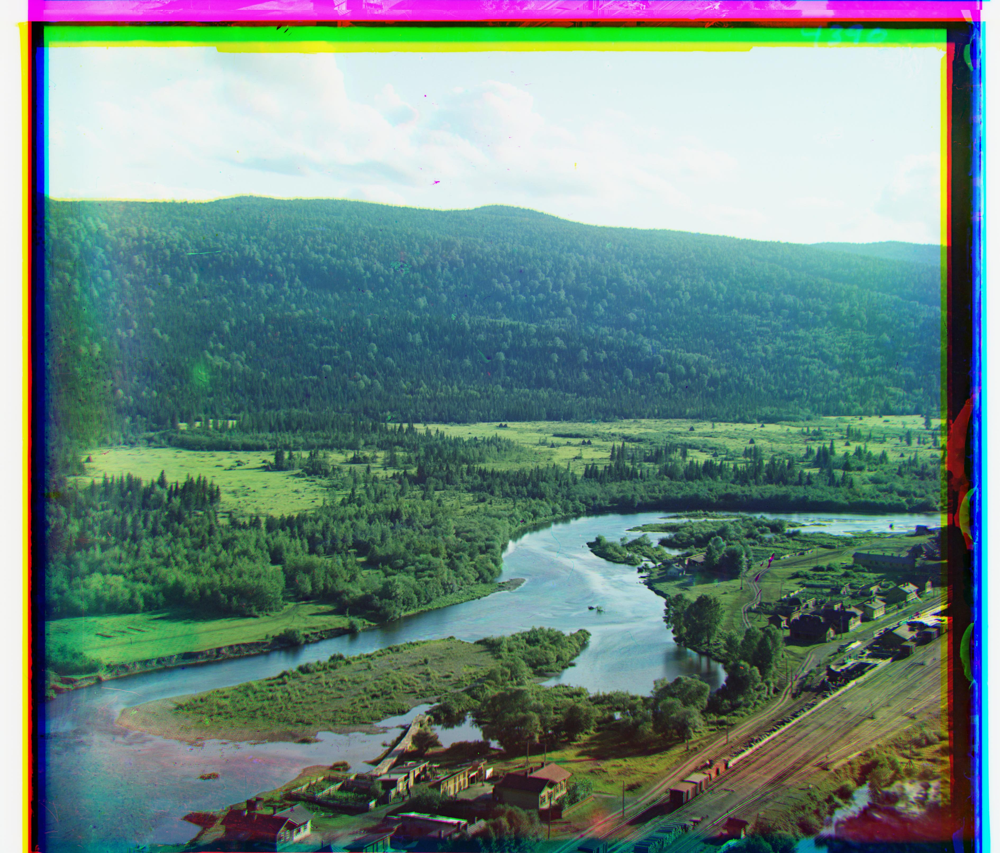
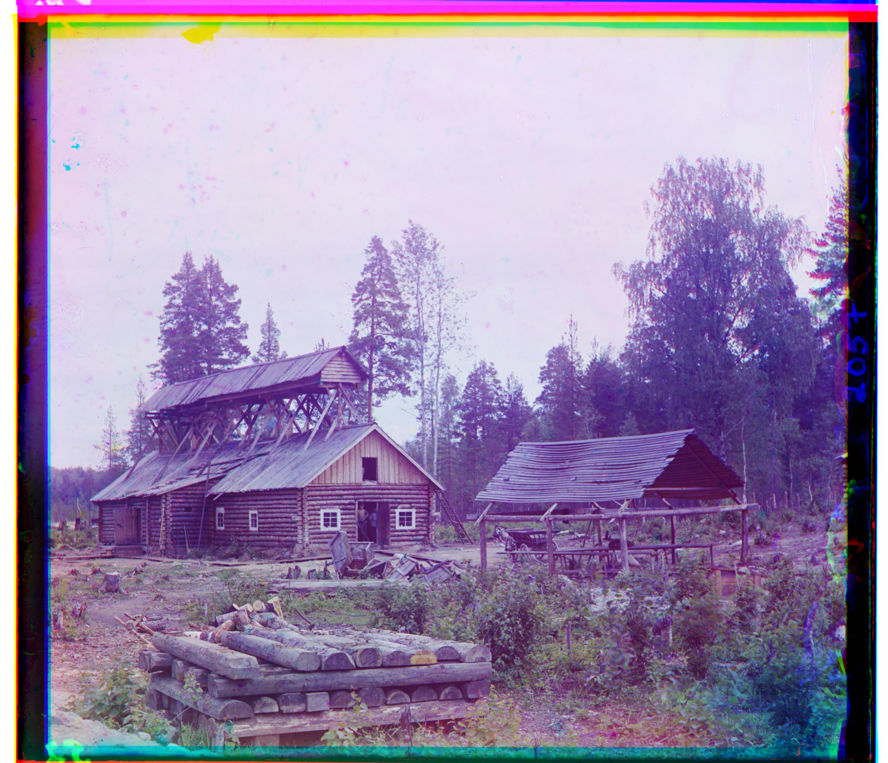
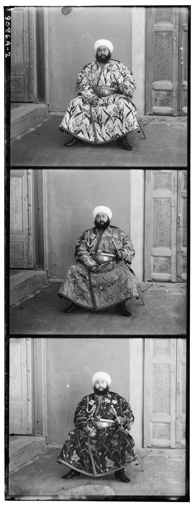

project 1
images of the russian empire
Intro
This project aims to colorize the Prokudin-Gorskii photo collection through a single scaling and multi scaling alignment approach. Sergei Mikhailovich Prokudin-Gorskii collected 3 exposures of the same scene through red, green, and blue filters. The images were then combined to create a color image. However, due to the time delay between exposures, the images are misaligned and need to be aligned before they can be combined. Below is an example of the 3 exposures and the final colorized image after alignment.


Part 1: Single Scale Alignment
The naive implementation of the alignment algorithm is to use a brute force approach to find the best alignment of the images. The algorithm iterates through all possible shifts of the images and computes a score for each shift. The shift with the best score is chosen as the best alignment.
An optimization to this approach is to simply search through a smaller range of shifts like
I explored using both normalized cross-correlation (NCC) scoring and Euclidean L2 distance, but found that NCC scoring was more robust to noise and produced better results. The final implementation of the single scale alignment algorithm uses NCC scoring to find the best alignment of the images.
Additionally, I found that cropping the images to remove the borders improved the alignment results. The borders of the images contain a lot of noise and can negatively impact the alignment results. By cropping the images (I chose a 10% crop), we can remove the noise and improve the alignment results.
The way I implemented the cropping was to simply crop the images by a fixed percentage of the image size, align the cropped images, and then apply the same shift to the original images. This way, we can align the images without losing any information from the original images.


Below are the results of the single scale alignment algorithm on the 'cathedral.jpg', 'monastery.jpg', and 'tobolsk.jpg' images and their respective shifts.


Part 2: Multi Scale Alignment
A less naive approach to the alignment algorithm is to use a multi scale approach to find the best alignment of the images. The algorithm first downsamples the images to a smaller size and then aligns the images at that scale. The best alignment at that scale is then used as the starting point for the next scale. This process is repeated until the images are aligned at the original scale.
Originally, this method worked very well on the smaller images, but when I tried to apply it to the larger images, I found that the alignment took up to 6 minutes per image. I realized that the search space for the larger images was too large and that I needed to limit the search space to a smaller range of shifts.
I found that using a coarse-to-fine approach significantly reduced the computation time while maintaining alignment quality. For the top level of the pyramid, I searched through a range of shifts of [-20, 20] pixels (in the downsampled image), and for the rest of the levels I only searched through a range of [-2, 2] pixels. This way, we can align the images in a reasonable amount of time while still maintaining alignment quality.
Below are the results of the multi scale alignment algorithm on the 14 given images in the Prokudin-Gorskii collection and 3 images I selected. All images were aligned in under 1 minute.
green: (5, 2), red: (12, 3)

green: (-3, 2), red: (3, 2)

green: (3, 3), red: (6, 3)

green: (15, -7), red: (82, -16)

green: (27, 3), red: (68, 7)

green: (25, 4), red: (58, -4)

green: (53, 14), red: (112, 11)
green: (81, 10), red: (174, 12)
green: (41, 17), red: (89, 23)

green: (49, -6), red: (95, -25)

green: (78, 29), red: (174, 36)

green: (59, 16), red: (124, 13)

green: (40, 7), red: (130, 11)

green: (49, 24), red: (96, -174)

green: (37, 21), red: (81, 34)

green: (38, 21), red: (76, 35)

green: (22, 13), red: (93, 25)
Part 3: Limitations / Failure Cases
You may have noticed that all but one of the previous images were aligned well. The outlier case is the Emir of Bukhara image as the three channels look quite displaced from each other. This is likely due to the fact that the three exposures have largely different intensities and the NCC scoring is not robust to this. Some sort of edge detection may be a better approach to align the images.
